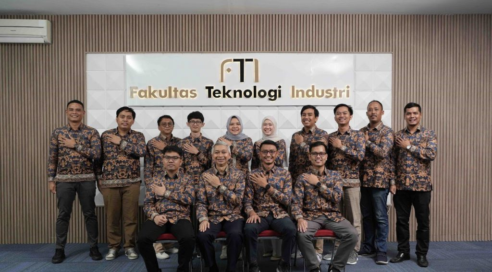

Sah! Prodi Teknik Informatika ITERA Raih Akreditasi “Baik Sekali” dari LAM INFOKOM
Tanggal : 25 Desember 2024
Program Studi Teknik Informatika Institut Teknologi Sumatera (ITERA) mencatatkan pencapaian membanggakan dengan memperoleh akreditasi “Baik Sekali” dari Lembaga Akreditasi Mandiri Informatika dan Komputer (LAM INFOKOM). Akreditasi ini berlaku hingga 11 Desember 2029, menandai langkah besar dalam upaya peningkatan mutu pendidikan di lingkungan ITERA.
Keberhasilan ini diumumkan setelah melalui serangkaian proses reakreditasi yang melibatkan penilaian komprehensif terhadap berbagai aspek, termasuk kurikulum, fasilitas, kualitas dosen, dan kinerja penelitian. Sebelumnya, Prodi Teknik Informatika ITERA terakreditasi “Baik,” dan kini peningkatan status menjadi “Baik Sekali” mencerminkan komitmen program studi dalam menjaga dan meningkatkan standar pendidikan.
“Keberhasilan Prodi Teknik Informatika ITERA dalam meningkatkan peringkat akreditasi menjadi Baik Sekali adalah hasil dari kerja keras, kolaborasi, dan dedikasi seluruh tim, termasuk dosen, tenaga kependidikan, mahasiswa, serta alumni. Capaian ini menjadi bukti komitmen bersama dalam menjaga dan meningkatkan kualitas pendidikan, penelitian, dan pengabdian kepada masyarakat.”
Lebih lanjut, Andika juga mengucapkan terima kasih kepada semua pihak yang telah berkontribusi. “Saya mengucapkan terima kasih sebesar-besarnya kepada semua pihak yang terlibat dan meluangkan waktu selama proses reakreditasi ini. Saya juga berharap keberhasilan ini menjadi motivasi untuk terus melangkah maju, menjadikan program studi ini unggul di tingkat nasional maupun internasional, serta melahirkan lulusan yang selalu siap menghadapi tantangan global,” tambahnya.
Akreditasi ini juga menjadi pendorong bagi Prodi Teknik Informatika ITERA untuk terus meningkatkan kualitas pendidikan, mempersiapkan mahasiswa dengan kompetensi terbaik, serta menjawab tantangan dunia digital yang terus berkembang.